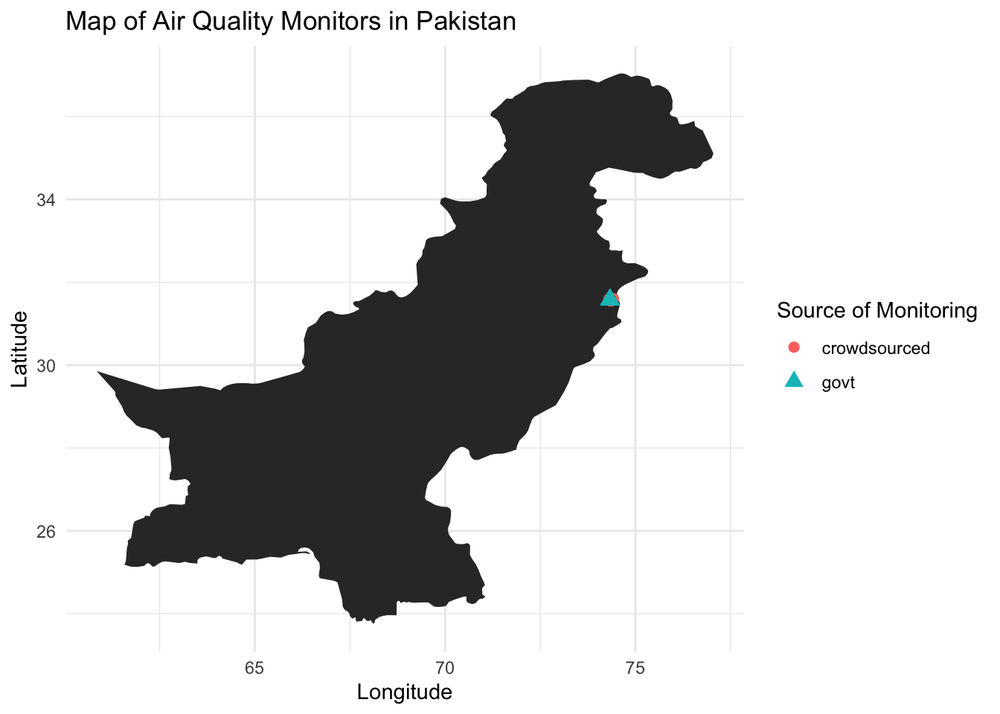
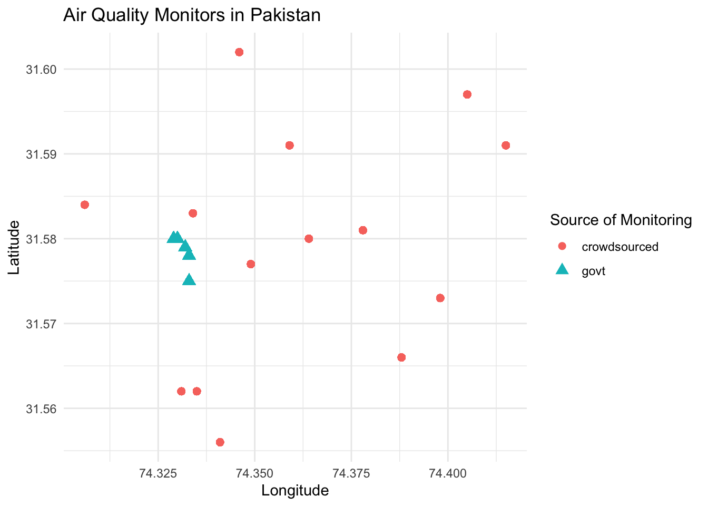
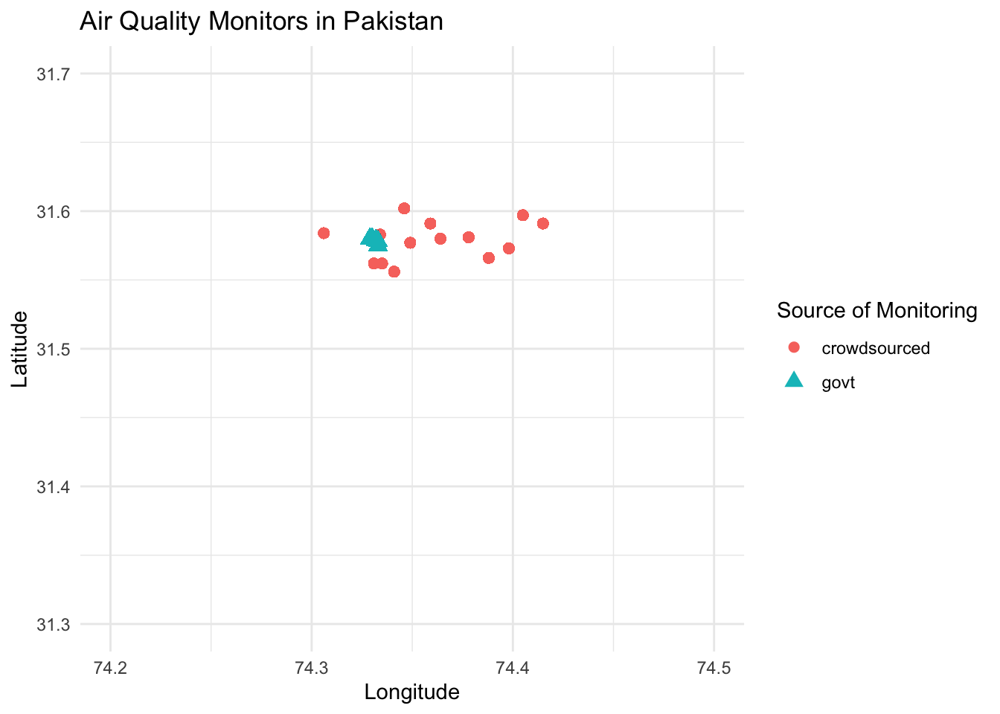

#Load libraries
library(dplyr)
library(here)
library(maps)
library(tidyverse)week1_homework
#Load data
crowdsourced <- readRDS(file.path("data", "airpol-PK-crowdsourced.RDS"))
govt <- readRDS(file.path("data", "airpol-PK-govt.RDS"))Question 1
- These dataframes have one row per pollution observation. How many pollution records are in each dataset? crowdourced: 5488 observations govt: 1960 observations
print(count(crowdsourced))# A tibble: 1 × 1
n
<int>
1 5488print(count(govt))# A tibble: 1 × 1
n
<int>
1 1960- Each monitor is located at a unique latitude and longitude location. How many unique monitors are in each dataset?
# Creating a new variable that groups lat & long to find # of unique monitors
crowdsourced_new <- crowdsourced %>%
group_by(latitude, longitude) %>%
mutate(id = cur_group_id())
print(paste ("The total number of unique monitors are: ",max(crowdsourced_new['id'])))[1] "The total number of unique monitors are: 14"Question 2
The goal of pollution monitoring in Lahore is to measure the average pollution conditions across the city.
What is the population in this setting? Please be precise. “In 2019, Lahore, Pakistan was the 12th most polluted city in the world, exposing a population of 11.1 million people to increased mortality and morbidity risks” population in Lahore = 11.1 million people
What are the samples in this setting? Please be precise. if we consider crowdsourced + govt:
# Calculating total stations
print(paste("The sample of this monitoring is: ", count(crowdsourced) + count(govt)))[1] "The sample of this monitoring is: 7448"- These samples were not randomly collected from across locations in Lahore. Given the sampling approaches described above, discuss possible biases that may enter when we use these samples to construct estimates of population parameters.
- The data were collected by individual households who opted to install monitors in their homes. This voluntary participation introduces biases that can affect the estimates of population parameters.
- Since the data was not randomly collected across different locations in Lahore, there is a risk that certain areas may be overrepresented (e.g., wealthier neighborhoods vs. lower-income areas), this causes a geographical bias.
Question 4
Use the location of the air pollution stations for both of the sampling strategies to generate a map showing locations of each observation. Color the two samples with different colors to highlight how each sample obtains measurements from different parts of the city.
#Creating the map of Pakistan
pakistan_map <- map_data("world") %>%
filter(region == "Pakistan")
ggplot() +
geom_polygon(data = pakistan_map, aes(x = long, y = lat, group = group)) +
geom_point(data = crowdsourced, aes(x = longitude, y = latitude, color = "crowdsourced"), size =2) +
geom_point(data = govt, aes(x = longitude, y = latitude, color = "govt"), size = 3, shape = 17) +
theme_minimal() +
labs(title = "Map of Air Quality Monitors in Pakistan",
x = "Longitude",
y = "Latitude",
color = "Source of Monitoring") +
theme(legend.position = "right")
#Creating map of Lahore
ggplot() +
geom_point(data = crowdsourced, aes(x = longitude, y = latitude, color = "crowdsourced"), size =2) +
geom_point(data = govt, aes(x = longitude, y = latitude, color = "govt"), size = 3, shape = 17) +
theme_minimal() +
labs(title = "Air Quality Monitors in Pakistan",
x = "Longitude",
y = "Latitude",
color = "Source of Monitoring") +
theme(legend.position = "right")
Question 5
The local newspaper in Pakistan, Dawn, claims that the government is misreporting the air pollution levels in Lahore. Do the locations of monitors in question 4, relative to crowd-sourced monitors, suggest anything about a possible political bias?
the lat and long ranges for the area covering Lahore, Pakistan is approx.31.3 - 31.7, 74.2-74.5 (Google Maps). As shown on the map this only covers a small section of the city. When comparing the monitors from the govt vs. crowd-sourced, we can observed that the gov monitors are located in the same area, indicating a political bias - this area could have been strategically place in a clean-air space which will misrepresent the whole city.
#adjust map with the space covering Lahore
ggplot() +
geom_point(data = crowdsourced, aes(x = longitude, y = latitude, color = "crowdsourced"), size =2) +
geom_point(data = govt, aes(x = longitude, y = latitude, color = "govt"), size = 3, shape = 17) +
theme_minimal() +
labs(title = "Air Quality Monitors in Pakistan",
x = "Longitude",
y = "Latitude",
color = "Source of Monitoring") +
theme(legend.position = "right") +
xlim(74.2, 74.5) +
ylim(31.3, 31.7)
Question 6
Given the recent corruption in air quality reporting, the Prime Minister of Pakistan has hired an independent body of environmental data scientists to create an unbiased estimate of the mean PM 2.5 across Lahore using some combination of both government stations and crowd sourced observations.
NASA’s satellite data indicates that the average PM across Lahore is 89.2 \(\mu g/m^3\). Since this is the most objective estimate of population-level PM 2.5 available, your goal is to match this mean as closely as possible by creating a new ground-level monitoring sample that draws on both the government and crowd-sourced samples.
Question 6.1
First, generate a random sample of size \(n=1000\) air pollution records by (i) pooling observations across the government and the crowd-sourced data; and (ii) drawing observations at random from this pooled sample.
Tip
bind_rows() may be helpful.
pooled_obs <- bind_rows(govt, crowdsourced)
random <- sample_n(pooled_obs,1000)
print(random)# A tibble: 1,000 × 4
date PM latitude longitude
<date> <dbl> <dbl> <dbl>
1 2019-02-22 56 31.6 74.3
2 2019-06-24 56 31.6 74.3
3 2019-06-09 35 31.6 74.3
4 2019-08-01 104 31.6 74.4
5 2019-05-03 42 31.6 74.3
6 2019-05-30 60 31.6 74.3
7 2019-10-27 106 31.6 74.4
8 2019-03-28 45 31.6 74.3
9 2018-12-01 113 31.6 74.4
10 2019-01-17 29 31.6 74.3
# ℹ 990 more rowsSecond, create a stratified random sample. Do so by (i) stratifying your pooled data-set into strata of 0.01 degrees of latitude, and (ii) randomly sampling 200 air pollution observations from each stratum.
- stratifying your pooled data-set into strata of 0.01 degrees of latitude
# creating strata -rounding down the latitude to the nearest 0.01 degree and grouping them
# next time use cut_width
stratified_data<-pooled_obs %>%
mutate(latitude_strata = round(latitude, 2)) %>%
group_by(latitude_strata)
print(stratified_data)# A tibble: 7,448 × 5
# Groups: latitude_strata [5]
date PM latitude longitude latitude_strata
<date> <dbl> <dbl> <dbl> <dbl>
1 2018-11-04 28 31.6 74.3 31.6
2 2018-11-05 34 31.6 74.3 31.6
3 2018-11-06 44 31.6 74.3 31.6
4 2018-11-07 60 31.6 74.3 31.6
5 2018-11-08 25 31.6 74.3 31.6
6 2018-11-09 60 31.6 74.3 31.6
7 2018-11-10 62 31.6 74.3 31.6
8 2018-11-11 48 31.6 74.3 31.6
9 2018-11-12 46 31.6 74.3 31.6
10 2018-11-13 25 31.6 74.3 31.6
# ℹ 7,438 more rows- randomly sampling 200 air pollution observations from each stratum
# randomly sampling 200 obs from each stratum
stratified_data <- stratified_data %>%
slice_sample(n = 200, replace = FALSE)
print(stratified_data)# A tibble: 1,000 × 5
# Groups: latitude_strata [5]
date PM latitude longitude latitude_strata
<date> <dbl> <dbl> <dbl> <dbl>
1 2019-02-07 87 31.6 74.3 31.6
2 2019-08-17 35 31.6 74.3 31.6
3 2019-08-13 115 31.6 74.3 31.6
4 2019-07-09 117 31.6 74.3 31.6
5 2019-11-15 85 31.6 74.3 31.6
6 2019-01-18 56 31.6 74.3 31.6
7 2019-08-19 45 31.6 74.3 31.6
8 2018-11-21 105 31.6 74.3 31.6
9 2018-11-28 82 31.6 74.3 31.6
10 2018-12-05 38 31.6 74.3 31.6
# ℹ 990 more rows#checking each strata has 200 samples
stratified_data_table<-stratified_data %>%
summarise(count=n())
print(stratified_data_table)# A tibble: 5 × 2
latitude_strata count
<dbl> <int>
1 31.6 200
2 31.6 200
3 31.6 200
4 31.6 200
5 31.6 200Question 6.2
Compare estimated means of PM 2.5 for each sampling strategy to the NASA estimate of 89.2 \(\mu g/m^3\).
- Which sample seems to match the satellite data best?
#Calculating mean & median for each stratum
PM_stratasummary <- stratified_data %>%
summarise(mean_value = mean(PM, na.rm = TRUE),
median_value = median(PM, na.rm = TRUE))
print(PM_stratasummary)# A tibble: 5 × 3
latitude_strata mean_value median_value
<dbl> <dbl> <dbl>
1 31.6 73.7 76.5
2 31.6 69.9 71
3 31.6 56.6 50.5
4 31.6 73.6 74
5 31.6 69.8 72 The sampling strata at 31.60 Deg has the closest PM 2.5 to NASA’s 89.2 µg/m3. At 31.60 Deg, it has mean of 70.2 and a median of 74.5 µg/m3, this deg could be a better representation of where most pollution is coming from.
- What would you recommend the Prime Minister do? Does your proposed sampling strategy rely more on government or on crowd-sourced data? Why might that be the case?
I would recommend that the Prime Minister increase the coverage area for air pollution monitoring stations to improve the distribution of where these monitoring sites are located. Expanding the network of monitoring stations will ensure that data collection is more representative of different regions, particularly in areas that are currently under-represented. Additionally, I would suggest to rely more crowdsourcing data by providing incentives to get more volunteers to install pollution monitors in their homes. This approach will help remove the political biases.